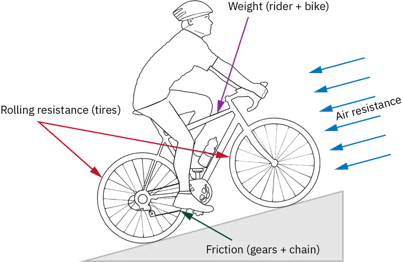
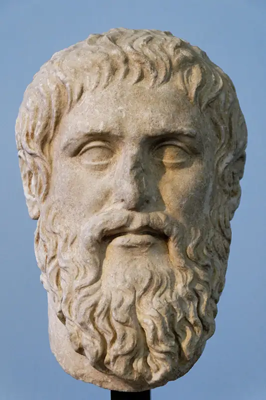
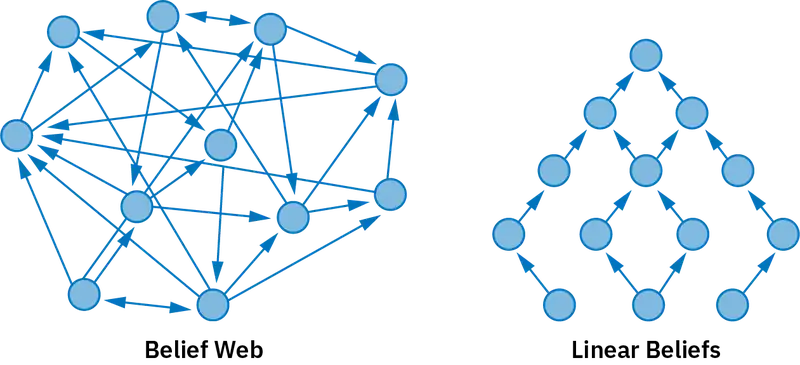
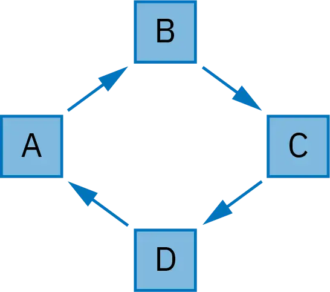
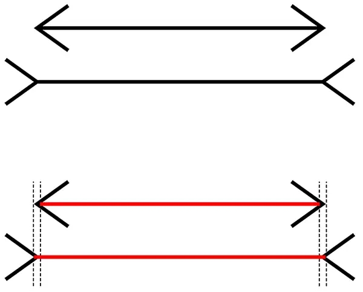
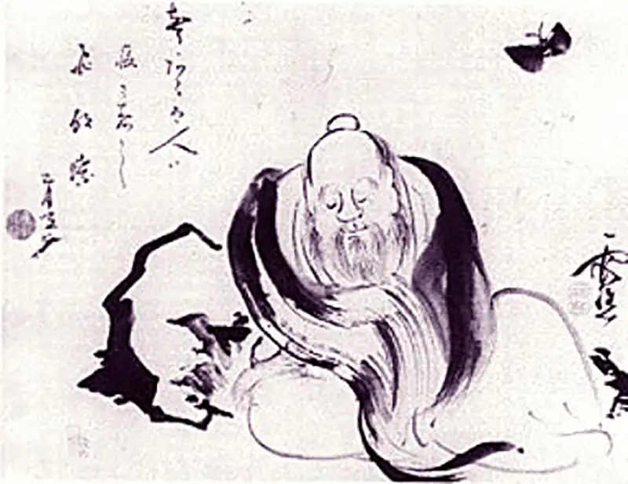
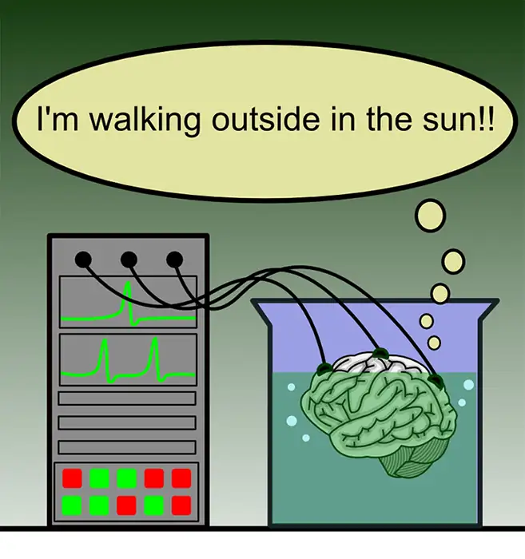

Chapter 7: Epistemology¶
Introduction¶
Within any discipline of study, the acquisition of new knowledge is a primary goal. Theorists and researchers throughout academia seek to expand the body of knowledge associated with their discipline. Philosophers likewise aim for knowledge acquisition but are also concerned with the nature of knowledge itself. What is knowledge? Is there a limit to what we can know? How can we increase our knowledge without first understanding what knowledge is? Epistemology is the field within philosophy that focuses on questions pertaining to the nature and extent of human knowledge. This chapter seeks to provide a general understanding of the discipline of epistemology.
7.1 What Epistemology Studies¶
Learning Objectives
By the end of this section, you will be able to:
- Describe the study of epistemology.
- Explain how the counterexample method works in conceptual analysis.
- Explain the difference between a priori and a posteriori knowledge.
- Categorize knowledge as either propositional, procedural, or by acquaintance.
The word epistemology is derived from the Greek words episteme, meaning “knowledge,” and logos, meaning “explanation” and translated in suffix form (-logia) as “the study of.” Hence, epistemology is the study of knowledge. Epistemology focuses on what knowledge is as well as what types of knowledge there are. Because knowledge is a complex concept, epistemology also includes the study of the possibility of justification, the sources and nature of justification, the sources of beliefs, and the nature of truth.
How to Do Epistemology¶
Like other areas within philosophy, epistemology begins with the philosophical method of doubting and asking questions. What if everything we think we know is false? Can we be sure of the truth of our beliefs? What does it even mean for a belief to be true? Philosophers ask questions about the nature and possibility of knowledge and related concepts and then craft possible answers. But because of the nature of philosophical investigation, simply offering answers is never enough. Philosophers also try to identify problems with those answers, formulate possible solutions to those problems, and look for counterarguments. For example, in questioning the possibility of knowledge, philosophers imagine ways the world could be such that our beliefs are false and then try to determine whether we can rule out the possibility that the world really is this way. What if there’s a powerful evil demon who feeds you all your conscious experiences, making you believe you are currently reading a philosophy text when in fact you are not? How could you rule this out? And if you can’t rule it out, what does this say about the concept of knowledge?
In answering epistemological questions, theorists utilize arguments. Philosophers also offer counterexamples to assess theories and positions. And many philosophers utilize research to apply epistemological concerns to current issues and other areas of study. These are the tools used in epistemological investigation: arguments, conceptual analysis, counterexamples, and research.
Conceptual Analysis and Counterexamples¶
One of the main questions within epistemology pertains to the nature of the concepts of knowledge, justification, and truth. Analyzing what concepts mean is the practice of conceptual analysis. The idea is that we can answer questions like “What is knowledge?” and “What is truth?” by using our grasp of the relevant concepts. When investigating a concept, theorists attempt to identify the essential features of the concept, or its necessary conditions. So, when investigating knowledge, theorists work to identify features that all instances of knowledge share. But researchers are not only interested in isolating the necessary conditions for concepts such as knowledge; they also want to determine what set of conditions, when taken together, always amounts to knowledge—that is, its sufficient conditions. Conceptual analysis is an important element of doing philosophy, particularly epistemology. When doing conceptual analysis, theorists actively endeavor to come up with counterexamples to proposed definitions. A counterexample is a case that illustrates that a statement, definition, or argument is flawed.
Connections
The introductory chapter provides an in-depth exploration of conceptual analysis. Counterexamples are discussed in the chapter on logic and reasoning.
Counterexamples to definitions in epistemology usually take the form of hypothetical cases—thought experiments intended to show that a definition includes features that are either not necessary or not sufficient for the concept. If a counterexample works to defeat an analysis, then theorists will amend the analysis, offer a new definition, and start the process over again. The counterexample method is part of the philosophical practice of getting closer to an accurate account of a concept. Understanding the process of conceptual analysis is key to following the debate in epistemological theorizing about knowledge and justification.
For example, a theorist could contend that certainty is a necessary component of knowledge: if a person were not completely certain of a belief, then they could not be said to know the belief, even if the belief were true. To argue against this “certainty” theory, another philosopher could offer examples of true beliefs that aren’t quite certain but are nevertheless considered to be knowledge. For example, take my current belief that there’s a bird on a branch outside my office window. I believe this because I can see the bird and I trust my vision. Is it possible that I am wrong? Yes. I could be hallucinating, or the so-called bird may be a decoy (a fake stuffed bird). But let’s grant that there is indeed a real bird on the branch and that “there is a bird on that branch” is true right now. Can I say that I know there is a bird on the branch, given that I believe it, it’s true, and I have good reason to believe it? If yes, then the “certainty” thesis is flawed. Certainty is not necessary to have knowledge. This chapter includes several examples such as this, where a theorist offers an example to undermine a particular account of knowledge or justification.
Arguments¶
As with all areas of philosophy, epistemology relies on the use of argumentation. As explained in the chapter on logic and reasoning, argumentation involves offering reasons in support of a conclusion. The aforementioned counterexample method is a type of argumentation, the aim of which is to prove that an analysis or definition is flawed. Here is an example of a structured argument:
- Testimonial injustice occurs when the opinions of individuals/groups are unfairly ignored or treated as untrustworthy.
- If the testimony of women in criminal court cases is less likely to be believed than that of men, then this is unfair.
- So, if the testimony of women in criminal court cases is less likely to be believed than that of men, this is a case of testimonial injustice.
The above argument links the general concept of testimonial injustice to a specific possible real-world scenario: women being treated as less believable by a jury. If women are considered less believable, then it is problematic.
Research¶
Notice that the above argument does not say that women are in fact considered less believable. To establish this thesis, philosophers can offer further arguments. Often, arguments utilize empirical research. If a theorist can find studies that indicate that women are treated less seriously than men in general, then they can argue that this attitude would extend to the courtroom. Philosophers often search for and utilize research from other areas of study. The research used can be wide-ranging. Epistemologists may use research from psychology, sociology, economics, medicine, or criminal justice. In the social and hard sciences, the goal is to accurately describe trends and phenomena. And this is where philosophy differs from the sciences—for epistemology, the goal is not only to describe but also to prescribe. Philosophers can argue that unjustifiably discounting the opinions of groups is bad and to be avoided. Hence, epistemology is a normative discipline.
The Normative Nature of Epistemology¶
This chapter began with the observation that knowledge is the goal of many disciplines. If knowledge is a goal, then it is desirable. Humans do not like being proven wrong in their beliefs. Possessing justification in the form of reasons and support for beliefs makes a person less likely to be wrong. Hence, both justification and knowledge are valuable. If knowledge is valuable and there are proper methods of justification that we should follow, then epistemology turns out to be a normative discipline. Normativity is the assumption that certain actions, beliefs, or other mental states are good and ought to be pursued or realized. One way to think of epistemology is that in describing what knowledge, truth, and justification are, it further prescribes the proper way to form beliefs. And we do treat knowledge as valuable and further judge others according to the justification for their beliefs.
A Preliminary Look at Knowledge¶
Because the concept of knowledge is so central to epistemological theorizing, it is necessary to briefly discuss knowledge before proceeding. Knowledge enjoys a special status among beliefs and mental states. To say that a person knows something directly implies that the person is not wrong, so knowledge implies truth. But knowledge is more than just truth. Knowledge also implies effort—that the person who has knowledge did more than just form a belief; they somehow earned it. Often, in epistemology, this is understood as justification. These features of knowledge are important to keep in mind as we continue. First, we will look at the different ways of knowing.
Ways of Knowing¶
The distinction between a priori knowledge and a posteriori knowledge reveals something important about the possible ways a person can gain knowledge. Most knowledge requires experience in the world, although some knowledge without experience is also possible. A priori knowledge is knowledge that can be gained using reason alone. The acquisition of a priori knowledge does not depend on experience. One way to think of a priori knowledge is that it is logically prior to experience, which does not necessarily mean that it is always prior in time to experience. Knowledge that exists before experience (prior in time) is innate knowledge, or knowledge that one is somehow born with. Theorists disagree over whether innate knowledge exists. But many theorists agree that people can come to know things by merely thinking. For example, one can know that 4 × 2 = 8 without needing to search for outside evidence.
A posteriori knowledge is knowledge that can only be gained through experience. Because a posteriori knowledge depends on experience, it is empirical. Something is empirical if it is based on and verifiable through observation and experience, so empirical knowledge is knowledge gained from sense perception. If my belief that there’s a bird on the branch outside my window is knowledge, it would be a posteriori knowledge. The difference between a posteriori and a priori knowledge is that the former requires experience and the latter does not.
While a priori knowledge does not require experience, this does not mean that it must always be reached using reason alone. A priori knowledge can be learned through experience. Think of mathematical truths. While it is possible to figure out multiplication using thinking alone, many first understand it empirically by memorizing multiplication tables and only later come to understand why the operations work the way they do.
Things You Can Know: Types of Knowledge¶
Philosophers classify knowledge not only by source but also by type. Propositional knowledge is knowledge of propositions or statements. A proposition or statement is a declarative sentence with a truth value—that is, a sentence that is either true or false. If one knows a statement, that means that the statement is true. And true statements about the world are usually called facts. Hence, propositional knowledge is best thought of as knowledge of facts. Facts about the world are infinite. It is a fact that the square root of 9 is 3. It is a fact that Earth is round. It is a fact that the author of this chapter is five feet, one inch tall, and it is a fact that Nairobi is the capital of Kenya. Often, philosophers describe propositional knowledge as “knowledge that,” and if you look at the structure of the previous sentences, you can see why. Someone can know that Nairobi is the capital of Kenya, and “Nairobi is the capital of Kenya” is a true proposition. Propositional knowledge can be a priori or a posteriori. Knowledge of our own height is clearly a posteriori because we cannot know this without measuring ourselves. But knowing that 3 is the square root of 9 is a priori, given that it’s possible for a person to reason their way to this belief. Propositional knowledge is the primary focus of traditional epistemology. In the following sections of this chapter, keep in mind that knowledge refers to propositional knowledge.
While traditional epistemology focuses on propositional knowledge, other types of knowledge exist. Procedural knowledge is best understood as know-how. Procedural knowledge involves the ability to perform some task successfully. While a person may know that a bicycle stays erect using centrifugal force and forward momentum caused by peddling, and that the forces of friction and air resistance will affect their speed, this does not mean that they know how to ride a bicycle. Having propositional knowledge concerning a task does not guarantee that one has procedural knowledge of that task. Indeed, one could be a physicist who studies the forces involved in keeping a bike upright, and therefore know many facts about bicycles, but still not know how to ride a bike.

Knowledge by acquaintance is knowledge gained from direct experience. A person knows something by acquaintance when they are directly aware of that thing. This awareness comes from direct perception using one’s senses. For example, I have knowledge by acquaintance of pain when I am in pain. I am directly aware of the pain, so I cannot be mistaken about the existence of the pain.
British philosopher Bertrand Russell (1872–1970) is credited with first articulating a distinction between knowledge by acquaintance and propositional knowledge, which he called knowledge by description (Russell 1910–1911). According to Russell, knowledge by acquaintance is a direct form of knowledge. A person has knowledge by acquaintance when they have direct cognitive awareness of it, which is awareness absent of inference. That knowledge by acquaintance is not the product of inference is very important. Inference is a stepwise process of reasoning that moves from one idea to another. When I feel pain, I am acquainted with that pain without thinking to myself, “I am in pain.” No inference is required on my part for me to know of my pain. I am simply aware of it. It is the directness of this knowledge that differentiates it from all other a posteriori knowledge. All knowledge by acquaintance is a posteriori, but not all a posteriori knowledge is knowledge by acquaintance. My awareness of pain is knowledge by acquaintance, yet when I infer that “something is causing me pain,” this belief is propositional.
Russell’s distinction between knowledge by acquaintance and propositional knowledge, if accurate, has important implications in epistemology. It shows that inference is used even in cases of beliefs that people think are obvious: ordinary beliefs based on perception. Russell thought that one can only have knowledge by acquaintance of one’s sensations and cannot have direct awareness of the objects that could be the cause of those sensations. This is a significant point. When I see the bird on a branch outside my office window, I am not immediately aware of the bird itself. Rather, I am directly aware of my perceptual experience of the bird—what philosophers call sense data. Sense data are sensations gained from perceptual experience; they are the raw data obtained through the senses (seeing, smelling, feeling, etc.). One’s perceptual experience is of sense data, not of the objects that could be causing that sense data. People infer the existence of external objects that they believe cause their perceptual experiences. Russell’s view implies that people always use reasoning to access the external world. I have knowledge by acquaintance of my perceptual experience of seeing a bird; I then infer ever so quickly (and often unconsciously) that there is a bird on the branch, which is propositional knowledge.
Not all philosophers think that experience of the external world is mediated through sense data. Some philosophers contend that people can directly perceive objects in the external world. But Russell’s theory introduces an important possibility in epistemological thinking: that there is a gap between one’s experience of the world and the world itself. This potential gap opens up the possibility for error. The gap between experience and the world is used by some thinkers to argue that knowledge of the external world is impossible.
Table 7.1 summarizes the types of knowledge discussed in this section.
Table 7.1 Types of Knowledge
| Type | Description | Examples |
|---|---|---|
| Propositional knowledge | Knowledge of propositions or statements; knowledge of facts | Examples are infinite: “I know that…” the Earth is round, two is an even number, lions are carnivores, grass is green, etc. |
| Procedural knowledge | “Know-how”; understanding how to perform some task or procedure | Knowing how to ride a bicycle, do a cartwheel, knit, fix a flat tire, dribble a basketball, plant a tree, etc. |
| Knowledge by acquaintance | Knowledge gained from direct experience | Perception of physical sensations, such as pain, heat, cold, hunger; important to differentiate between the knowledge by acquaintance that is the sensation (e.g., a physical sensation of feeling cold) and related inferences, such as “the air temperature must be dropping,” which is propositional knowledge. |
Truth¶
Philosophers who argue that knowledge of the external world is impossible do so based on the idea that one can never be certain of the truth of one’s external world beliefs. But what does it mean to claim that a belief is true? People are sometimes tempted to believe that truth is relative. A person may say things like “Well, that’s just their truth” as if something can be true for one person and not for others. Yet for statements and propositions, there is only one truth value. One person can believe that Earth is flat while another can believe is it round, but only one of them is right. People do not each personally get to decide whether a statement is true. Furthermore, just because one has no way of determining whether a statement is true or false does not mean that there is no truth to the matter. For example, you probably don’t quite know how to go about determining the exact number of blades of grass on the White House lawn, but this does not mean that there is no true answer to the question. It is true that there is a specific number of blades of grass at this moment, even if you cannot know what that number is.
But what does it mean for a statement to be true? At first, this question may seem silly. The meaning of truth is obvious. True things are correct, factual, and accurate. But to say that something is correct, factual, or accurate is just another way of saying it is true. Factual just means “true.” Creating a noncircular and illuminating account of truth is a difficult task. Nevertheless, philosophers attempt to explain truth. Philosophers often are curious about and question concepts that most people accept as obvious, and truth is no exception.
Theories of truth and the debate over them are a rather complicated matter not suitable for an introductory text. Instead, let’s briefly consider two ways of understanding truth in order to gain a general understanding of what truth is. Aristotle claimed that a true statement is one that says of something that it is what it is or that it is not what it is not (Aristotle 1989). A possible interpretation of Aristotle’s idea is that “A is B” is true if and only if A is B. Notice that this simply removes the quotations around the proposition. The idea is simple: the statement “Dogs are mammals” is true if dogs are mammals.
Another way of understanding truth is as a correspondence between statements and the world. The correspondence theory of truth proposes that a statement is true if and only if that statement corresponds to some fact (David 2015). A fact is a state of affairs in the world—an arrangement of objects and properties in reality—so the statement “The dog is under the bed” is true if and only if there exists in the world a dog and a bed and the dog is related to the bed by being underneath it. The correspondence theory of truth makes truth a relation between statements and the world. If statements are appropriately related to the world—if they correspond to the world—then those statements can be said to be true.
7.2 Knowledge¶
Learning Objectives
By the end of this section, you will be able to:
- Identify and explain the elements of Plato’s traditional account of knowledge.
- Describe the Gettier problem.
- Recall a Gettier case and explain how it is a counterexample to the traditional account of knowledge.
- Identify and explain a way of thinking that attempts to solve the Gettier problem.
What does it mean to say that one knows something? Knowledge is an important concept in all areas of thought. Knowledge is the goal and therefore enjoys a special status. Investigating the nature of knowledge reveals the importance of other concepts that are key to epistemological theorizing—justification in particular.

Plato and the Traditional Account of Knowledge¶
Plato, one of the most important of the Greek philosophers, hypothesized that knowledge is justified true belief. Plato’s analysis is known as the traditional account of knowledge. Plato’s definition is that a person S knows proposition P if and only if
- P is true,
- S believes P, and
- S is justified in believing P (Plato 1997b).
Plato’s hypothesis on knowledge, often referred to as the JTB account (because it is “justified true belief”), is highly intuitive. To say “John knows P, but he does not believe P” sounds wrong. In order to know something, a subject must first believe it. And one also cannot say “Ali knows P, but P is false.” A person simply cannot have knowledge of false things. Knowledge requires truth. Last, someone should not claim to know P if they have no reason to believe P (a reason to believe being justification for P).
Problems with the Traditional Account of Knowledge¶
Amazingly, Plato’s view that knowledge is justified true belief was generally accepted until the 20th century (over 2,000 years!). But once this analysis was questioned, a flurry of developments occurred within epistemology in the latter half of the 20th century. This section discusses the counterexample method at play in the dialectic concerning what knowledge is. Plato’s JTB analysis was the first to come under scrutiny.
In 1963, American philosopher Edmund Gettier (1927–2021) published a short paper titled “Is Justified True Belief Knowledge?,” which upended the JTB canon in Western philosophy. Gettier presents two counterexamples to Plato’s analysis of knowledge. In these counterexamples, a person seems to have a justified true belief, yet they do not seem to have knowledge. While Gettier is credited with the first popular counterexample to the JTB account, he was not the first philosopher to articulate a counterexample that calls into question Plato’s analysis. But because Gettier published the first influential account, any example that seems to undermine Plato’s JTB account of knowledge is called a Gettier case. Gettier cases illustrate the inadequacy of the JTB account—a problem referred to as the Gettier problem.
Dharmakīrti’s Mirage¶
The earliest known Gettier case, long predating the term, was conceived by the eighth century Indian Buddhist philosopher Dharmakīrti. Dharmakīrti’s case asks one to imagine a weary nomad traveling across the desert in search of water (Dreyfus 1997). The traveler crests a mountain and sees what appears to be an oasis in the valley below, and so comes to believe that there is water in the valley. However, the oasis is just a mirage. Yet there is water in the valley, but it is just beneath the surface of the land where the mirage is. The traveler is justified in believing there is water in the valley due to sensory experience. Furthermore, it is true that there is water in the valley. However, the traveler’s belief does not seem to count as knowledge. Dharmakīrti’s conclusion is that the traveler cannot be said to know there is water in the valley because the traveler’s reason for believing that there is water in the valley is an illusory mirage.
Russell’s Case¶
Perhaps you’ve heard the phrase “Even a broken clock is right twice a day.” The next case relies on this fact about broken clocks. In 1948, Bertrand Russell offered a case in which a man looks up at a stopped clock at exactly the correct time:
There is the man who looks at a clock which is not going, though he thinks it is, and who happens to look at it at the moment when it is right; this man acquires a true belief as to the time of day, but cannot be said to have knowledge. (Russell 1948, 154)
Imagine that the clock the man looks at is known for its reliability. Hence, the man is justified in believing that the time is, for example, 4:30. And, as the cases supposes, it is true that it is 4:30. However, given that the clock is not working and that the man happens to look up at one of the two times a day that the clock is correct, it is only a matter of luck that his belief happens to be true. Hence, Russell concludes that the man cannot be said to know the correct time.
Fake Barn Country¶
The last Gettier case we will look at is from American philosopher Carl Ginet (b. 1932) (Goldman 1976). Henry is driving through a bucolic area of farmland and barns. What he doesn’t realize, however, is that the area is currently being used as a movie set, and all the barns save one are actually barn facades. While looking at one of the barns, Henry says to himself, “That is a barn.” Luckily for Henry, the one he points to is the one true barn in the area. Again, all the conditions in Plato’s analysis of knowledge are met. It is true that Henry is looking at a real barn, and he believes it is a barn. Furthermore, he has come to this belief utilizing justifiable means—he is using his vision, in normal lighting, to identify a common object (a barn). Yet one cannot reasonably say that Henry knows the barn is a barn because he could have, by chance, accidentally identified one of the fake barns as a true barn. He fortunately happens to pick the one true barn.
Table 7.2 summarizes the Gettier cases discussed in this chapter.
Table 7.2 Gettier Cases
| Case | Proposed by | Description | How does this challenge Plato’s characterization of knowledge as justified, true belief? |
|---|---|---|---|
| Dharmakīrti’s Mirage | Eighth century Indian Buddhist philosopher Dharmakīrti | A person travelling in the dessert sees a mirage of a watery oasis in a valley and concludes that there is water in the valley. In fact, there is water in the valley, but it is beneath the surface and not visible. | The traveler cannot be said to know there is water in the valley because the traveler’s reason for believing that there is water in the valley is an illusory mirage. |
| Russell’s Case | British philosopher Bertrand Russell (1872 – 1970) | A man looks at a stopped clock at exactly the right time and correctly concludes the actual time. | It is only a matter of luck that the man’s belief about what time it is happens to be true. Hence, the man cannot be said to know the correct time. |
| Fake Barn Country | American philosopher Carl Ginet (b. 1932) | A person driving through a landscape that is being used as a movie and is full of fake barns happens to look at the one barn that is real and conclude, “this is barn.” | The person cannot reasonably be said to know the barn is a real barn because they could easily have identified one of the fake barns as a real barn and been wrong. |
Fixing Plato’s Traditional Account of Knowledge¶
Gettier cases demonstrate that Plato’s traditional account of knowledge as justified true belief is wrong. Specifically, Gettier cases show that a belief being true and justified is not sufficient for that belief to count as knowledge. In all the cases discussed, the subject seems to have a justified true belief but not knowledge. Notice that this does not mean that belief, truth, or justification is not necessary for knowledge. Indeed, when speaking of propositional knowledge, all philosophers grant that belief and truth are necessary conditions for knowledge. A person cannot be said to know a proposition if they do not believe that proposition. And clearly, if a belief is to count as knowledge, then that belief simply cannot be false. Accordingly, attempts to solve the Gettier problem do one of two things: either they replace the justification condition with something more robust, or they add a fourth condition to JTB to make the account sufficient.
No False Premises¶
In Dharmakīrti’s case, the nomad believes there is water in the valley based on the false belief that a mirage is an oasis. And in Russell’s case, the man bases his true belief about the time on the false belief that the clock he’s looking at is working. In both cases, the inference that leads to the true belief passes through false premises. In response to this fact, American philosopher Gilbert Harman (1928–2021) suggested adding a condition to the JTB account that he termed “no false lemmas” (Harman 1973). A false lemma is a false premise, or step in the reasoning process. Harman’s fourth condition is that a person’s belief cannot be based on an inference that uses false premises. According to Harman, S knows P if and only if (1) P is true, (2) S believes P, (3) S is justified in believing P, and (4) S did not infer P from any falsehoods.
Harman theorized that many counterexamples to the traditional account share a similar feature: the truth of the belief is not appropriately connected to the evidence used to deduce that belief. Going back to Dharmakīrti’s case, what makes the statement “There’s water in the valley” true is the fact that there is water below the surface. However, the nomad comes to believe that there is water based on the mistaken belief that a mirage is an oasis, so what makes the belief true is not connected to the reason the nomad believes it. If Harman’s condition that the reasoning that leads to belief cannot pass through false steps is added, then the nomad’s belief no longer counts as knowledge.
Harman’s emendation explains why the nomad does not have knowledge and accounts for the intuition that the man in Russell’s case does not actually know what time it is. However, this cannot take care of all Gettier cases. Consider the case of Henry in fake barn country. Henry comes to believe he is looking at a barn based on his perceptual experience of the barn in front of him. And Henry does look at a real barn. He does not reason through any false premises, such as “All the structures on my drive are barns.” His inference flows directly from his perceptual experience of a real barn. Yet it is a matter of luck that Henry isn’t looking at one of the many barn facades in the area, so his belief still does not seem to count as knowledge. Because Harman’s account is vulnerable to the barn counterexample, it does not solve the Gettier problem.
Ruling Out Defeaters and Alternatives¶
While driving through fake barn country, Henry happens to form the belief “That is a barn” when looking at the only real barn in the area. While Henry’s belief is not based on false premises, there still seems to be something wrong with it. Why? The problem is that certain facts about Henry’s environment (that it is filled with barn facades), if known, would undermine his confidence in the belief. That the area is predominantly filled with barn facades is what is known as a defeater because it serves to defeat the justification for his belief. Contemporary American philosophers Keith Lehrer and Thomas Paxson Jr. suggest that justified true belief is knowledge as long as there are no existing defeaters of the belief (Lehrer and Paxson 1969). S has knowledge that P if and only if (1) P is true, (2) S believes P, (3) S is justified in believing P, and (4) there exist no defeaters for P. The added fourth condition means that there cannot exist evidence that, if believed by S, would undermine S’s justification.
The “no defeaters” condition solves all three Gettier cases discussed so far because in each case, there exists evidence that, if possessed by the subject, would undermine their justification. Henry cannot be said to know he’s looking at a barn because of the evidence that most of the barns in the area are fake, and Russell’s man doesn’t know the time because the clock is stopped. The “no defeaters” condition thus helps solve many Gettier cases. However, we now need a thorough account of when evidence counts as a defeater. We are told that a defeater is evidence that would undermine a person’s justification but not how it does this. It cannot be that all evidence that weakens a belief is a defeater because this would make knowledge attainment much more difficult. For many of our justified true beliefs, there exists some evidence that we are unaware of that could weaken our justification. For example, we get many beliefs from other people. Research indicates that people tell an average of one lie per day (DePaulo et al. 1996; Serota, Levine, and Boster 2010). So when someone tells you something in conversation, often it is true that the person has lied once today. Is the evidence that a person has lied once today enough evidence to undermine your justification for believing what they tell you?
Notice that because a defeater is evidence that would undermine a person’s justification, what counts as a defeater depends on what justification is. Of the theories of knowledge examined so far, all of them treat justification as basic. They state that a belief must be justified but not how to measure or determine justification.
The Problem with Justification¶
The traditional analysis of knowledge explains that knowledge is justified true belief. But even if we accept this definition, we could still wonder whether a true belief is knowledge because we may wonder if it is justified. What counts as justification? Justification is a rather broad concept. Instead of simply stating that justification is necessary for knowledge, perhaps a thorough account of knowledge ought to instead spell out what this means. The next section looks more deeply at how to understand justification and how some theorists suggest replacing the justification condition in order to solve the Gettier problem.
7.3 Justification¶
Learning Objectives
By the end of this section, you will be able to:
- Explain what justification means in the context of epistemology.
- Explain the difference between internal and external theories of justification.
- Describe the similarities and differences between coherentism and foundationalism.
- Classify beliefs according to their source of justification.
Much of epistemology in the latter half of the 20th century was devoted to the question of justification. Questions about what knowledge is often boil down to questions about justification. When we wonder whether knowledge of the external world is possible, what we really question is whether we can ever be justified in accepting as true our beliefs about the external world. And as previously discussed, determining whether a defeater for knowledge exists requires knowing what could undermine justification.
We will start with two general points about justification. First, justification makes beliefs more likely to be true. When we think we are justified in believing something, we think we have reason to believe it is true. How justification does this and how to think about the reasons will be discussed below. Second, justification does not always guarantee truth. Justification makes beliefs more likely to be true, which implies that justified beliefs could still be false. The fallibility of justification will be addressed at the end of this section.
The Nature of Justification¶
Justification makes a belief more likely to be true by providing reasons in favor of the truth of the belief. A natural way to think of justification is that it provides logical support. Logic is the study of reasoning, so logical support is strong reasoning. If I am reasoning correctly, I am justified in believing that my dog is a mammal because all dogs are mammals. And I am justified in believing that \(3\sqrt{1332}=444\) if I did the derivation correctly. But what if I used a calculator to derive the result? Must I also have reasons for believing the calculator is reliable before being justified in believing the answer? Or can the mere fact that calculators are reliable justify my belief in the answer? These questions get at an important distinction between the possible sources of justification—whether justification is internal or external to the mind of the believer.
Internalism and Externalism¶
Theories of justification can be divided into two different types: internal and external. Internalism is the view that justification for belief is determined solely by factors internal to a subject’s mind. The initial appeal of internalism is obvious. A person’s beliefs are internal to them, and the process by which they form beliefs is also an internal mental process. If you discover that someone engaged in wishful thinking when they came to the belief that the weather would be nice today, even if it turns out to be true, you can determine that they did not know that it would be nice today. You will believe they did not have that knowledge because they had no reasons or evidence on which to base their belief. When you make this determination, you reference that person’s mental state (the lack of reasons).
But what if a person had good reasons when they formed a belief but cannot currently recall what those reasons were? For example, I believe that Aristotle wrote about unicorns, although I cannot remember my reasons for believing this. I assume I learned it from a scholarly text (perhaps from reading Aristotle himself), which is a reliable source. Assuming I did gain the belief from a reliable source, am I still justified given that I cannot now recall what that source was? Internalists contend that a subject must have cognitive access to the reasons for belief in order to have justification. To be justified, the subject must be able to immediately or upon careful reflection recall their reasons. Hence, according to internalism, I am not justified in believing that Aristotle wrote about unicorns.
On the other hand, an externalist would say my belief about Aristotle is justified because of the facts about where I got the belief. Externalism is the view that at least some part of justification can rely on factors that are not internal or accessible to the mind of the believer. If I once had good reasons, then I am still justified, even if I cannot now cite those reasons. Externalist theories about justification usually focus on the sources of justification, which include not only inference but also testimony and perception. The fact that a source is reliable is what matters. To return to the calculator example, the mere fact that a calculator is reliable can function as justification for forming beliefs based on its outputs.
An Example of Internalism: Ruling Out Relevant Alternatives¶
Recall that the “no defeaters” theory of knowledge requires that there exist no evidence that, if known by the subject, would undermine their justification. The evidence is not known by the subject, which makes the evidence external. The fourth condition could instead be an internal condition. Rather than require that there exist no evidence, one could say that S needs to rule out any relevant alternatives to their belief. The “no relevant alternatives” theory adds to the traditional account of knowledge the requirement that a person rule out any competing hypotheses for their belief. Ruling out refers to a subject’s conscious internal mental state, which makes this condition internal in nature. Like the “no defeaters” condition, the “no relevant alternatives” condition is meant to solve the Gettier problem. It does so by broadening the understanding of justification so that justification requires ruling out relevant alternatives. However, it still doesn’t solve the Gettier problem. Returning to the barn example, the possibility that there are barn facades is not a relevant alternative to the belief that one is looking at a barn. Unless one is in Hollywood, one would not think that facades are a distinct possibility.
An Example of Externalism: Causal Theories¶
Externalists hold that a subject need not have access to why their true beliefs are justified. But some theorists, such as American philosopher Alvin Goldman (b. 1938), argue that the justification condition in the account of knowledge should be replaced with a more substantial and thorough condition that effectively explains what justification is. Goldman argues that beliefs are justified if they are produced by reliable belief-forming processes (Goldman 1979). Importantly, it is the process that confers justification, not one’s ability to recount that process. Goldman’s account of knowledge is that a true belief is the result of a reliable belief-forming process.
Goldman’s theory is called historical reliabilism—historical because the view focuses on the past processes that led to a belief, and reliabilism because, according to the theory, processes that reliably produce true beliefs confer justification on those beliefs. Reliable belief-forming processes include perception, memory, strong or valid reasoning, and introspection. These processes are functional operations whose outputs are beliefs and other cognitive states. For example, reasoning is an operation that takes as input prior beliefs and hypotheses and outputs new beliefs, and memory is a process that “takes as input beliefs or experiences at an earlier time and generates as output beliefs at a later time” (Goldman 1979, 12). Usually, memory is reliable in the sense that it is more likely to produce true beliefs than false ones.
Because Goldman’s approach is externalist, the justification-conferring process need not be cognitively accessible to the believer. His view has also been called causal because he focuses on the causes of belief. If a belief is caused in the right way (by a reliable belief-forming processes), then it is justified. One virtue of this approach is that it accounts for the intuition that someone could have a justified belief without being able to cite all the reasons for holding that belief. However, this view is not without fault. The original impetus behind revising Plato’s traditional JTB analysis was to solve the Gettier problem, and Goldman’s account cannot do this. Consider again Henry and the barn. Henry looks at a real barn and forms the belief that it is a barn. Henry’s belief that he is looking at a barn is caused by a reliable belief-forming process (perception), so according to Goldman’s account, Henry does have knowledge. Yet many philosophers think that Henry doesn’t have knowledge given the lucky nature of his belief.
Theories of Justification¶
So far, we have looked at theories of justification as applied to individual beliefs. But beliefs are not always justified in isolation. Usually, the justification of one belief depends on the justification of other beliefs. I must be justified in trusting my perception to then be justified in believing that there is a bird outside of my office window. Thus, some theories focus on the structure of justification—that is, how a system or set of beliefs is structured. The theories on the structure of justification aim to illustrate how the structure of a system of beliefs leads to knowledge, or true beliefs.
Foundationalism¶
Much of what a subject justifiably believes is inferred from other justified beliefs. For example, Ella justifiably believes the Battle of Hastings occurred in 1066 because her history professor told her this. But the justification for her belief doesn’t end there. Why is Ella justified in believing that her history professor is a good source? Furthermore, why is she even justified in believing that her history professor told her this? To the second question, Ella would reply that she is justified because she remembers her professor telling her. But then one can ask, Why is the reliance on memory justifiable? Justified beliefs rest on other justified beliefs. The question is whether the chain of justification ever ends. Foundationalists hold that justification must terminate at some point.
Foundationalism is the view that all justified beliefs ultimately rest on a set of foundational, basic beliefs. Consider a house. Most of what people see of a house is the superstructure—the main floor, columns, and roof. But the house must rest on a foundation that stabilizes and props up the parts of the house people can see. According to foundationalists, most beliefs are like the superstructure of the house—the frame, roof, and walls. The majority of people’s beliefs are inferential beliefs, or beliefs based on inference. And according to foundationalism, all beliefs rest on a foundation of basic beliefs (Hasan and Fumerton 2016). One of Ella’s foundational beliefs could be that her memory is reliable. If this belief is justified, then all of Ella’s justified beliefs derived from memory will rest on this foundational belief.
But what justifies basic beliefs? If basic beliefs function so as to justify other beliefs, then they too must be justified. If the foundation is not justified, then none of the beliefs that rest on it are justified. According to foundationalism, the beliefs that make up the foundation are justified beliefs, but they are justified non-inferential beliefs. Foundational beliefs must be non-inferential (not based on inference) because if they were inferential, they would get their justification from another source, and they would no longer be foundational. Foundational beliefs are supposed to be where the justification stops.
What is a basic belief, and what are the reasons for thinking basic beliefs are justified? French philosopher René Descartes (1596–1650) was a foundationalist, and he held that people’s basic beliefs are indubitable (Descartes 2008). An indubitable belief is one that cannot be mistaken. Clearly, if the foundation is made of beliefs that cannot be mistaken, then it is justified. But why think that foundational beliefs cannot be mistaken? Descartes thought that whatever a subject can clearly and distinctly conceive of in their mind, they can take to be true because God would not allow them to be fooled. As an illustration of how some beliefs might be indubitable, recall that knowledge by acquaintance is direct and unmediated knowledge. Acquaintance is unmediated by other ways of knowing, including inference, so beliefs gained though acquaintance are non-inferential, which is what the foundationalist wants. Beliefs gained via acquaintance are also justified, which is why Russell deems them knowledge. As an example, imagine that you see a green orb in your field of vision. You may not know whether the green orb is due to something in your environment, but you cannot be mistaken about the fact that you visually experience the green orb. Hence, knowledge by acquaintance is a possible candidate for the foundation of beliefs.
Coherence¶
Coherentism is the view that justification, and thus knowledge, is structured not like a house but instead like a web. More precisely, coherentism argues that a belief is justified if it is embedded in a network of coherent, mutually supported beliefs. Think of a web. Each strand in a web is not that strong by itself, but when the strands are connected to multiple other strands and woven together, the result is a durable network. Similarly, a subject’s justification for individual beliefs, taken alone, is not that strong. But when those beliefs are situated in a system of many mutually supporting beliefs, the justification grows stronger. Justification emerges from the structure of a belief system (BonJour 1985).
Within foundationalism, the justifications for some beliefs can proceed in a completely linear fashion. Ella believes the Battle of Hastings occurred in 1066 because her professor told her, and she believes that her professor told her because she remembers it and thinks her memory is justifiable. One belief justifies another, which justifies another, and so on, until the foundation is reached. Yet very few beliefs are actually structured in this manner. People often look for support for their beliefs in multiple other beliefs while making sure that they are also consistent. Figure 7.5 offers a simplified visual of the two different structures of belief.

Often, when we think of the justification for our beliefs, we don’t just consider the original source of a belief. We also think about how that belief fits into our other beliefs. If a belief does not cohere with other beliefs, then its justification appears weak, even if the initial justification for the belief seemed strong. Suppose you need to go to the bank, and on your way out the door, your roommate tells you not to waste your time because they drove by the bank earlier and it was closed. Your roommate’s testimony seems like enough reason to believe the bank is closed. However, it is a weekday, and the bank is always open during the week. Furthermore, it is not a holiday. You check the bank’s website, and it states that the bank is open. Hence, the belief that the bank is closed does not cohere with your other beliefs. The lack of coherence with other beliefs weakens the justification for believing what your otherwise reliable roommate tells you.
To be fair, foundationalists also consider coherence of beliefs in determining justification. However, as long as a belief is consistent with other beliefs and rests on the foundation, it is justified. But consistency is not the same thing as logical support. The beliefs that there is a bird in that tree, it is November, and a person is hungry are all consistent with one another, but they do not support one another. And for coherentists, logical consistency alone does not make a system of belief justified. Justification arises from a system of beliefs that mutually reinforce one another. Support can happen in many ways: beliefs can deductively entail one another, they can inductively entail one another, and they can cohere by explaining one another. Suppose I am trying to remember where my friend Faruq is from. I believe he is from Tennessee but am not sure. But then I remember that Faruq often wears a University of Tennessee hat and has a Tennessee Titans sticker on this car. He also speaks with a slight southern twang and has told stories about hiking in the Smoky Mountains, which are partially in Tennessee. That Faruq is from Tennessee can explain these further beliefs. Note that I can get more assurance for my belief that Faruq is from Tennessee by considering my other beliefs about him. When beliefs mutually reinforce one another, they acquire more justification.
Coherentism more naturally reflects the actual structure of belief systems, and it does so without relying on the notion of basic, justified, non-inferential beliefs. However, coherentism has weaknesses. One objection to coherentism is that it can result in circularity. Within a system of beliefs, any belief can play a roundabout role in its own justification. Figure 7.6 illustrates this problem.

Another objection to coherentism is called the isolation objection. A network of beliefs can mutually explain and support one another, thus giving them justification. However, it is not guaranteed that these beliefs are connected to reality. Imagine a person, Dinah, who is trapped in a highly detailed virtual reality. Dinah has been trapped for so long that she believes her experiences are of the real world. Because of the detailed nature of Dinah’s virtual reality, most of her beliefs are consistent with and support one another, just as your beliefs about the real world do. As long as Dinah’s beliefs are consistent and coherent, she will be justified in believing that her experience is of real objects and real people. So Dinah has justification even though all her beliefs concerning the reality of her world are false. Dinah’s situation reveals an important feature of justification: while justification makes beliefs more likely to be true, it does not always guarantee that they are true. Justification is often fallible.
The Fallible Nature of Justification¶
The sources of beliefs are varied. Perception, reason, hope, faith, and wishful thinking can all result in belief. Yet just because something results in belief, that does not mean that the belief is justified. Beliefs that result from wishful thinking are not justified because wishful thinking does not make a belief more likely to be true. A source of justification is a reliable basis for belief. Yet while justification is a reliable source, notice that this does not mean that the belief is true; it just makes it more likely. Justified beliefs can turn out to be false. In order to drive this point home, we will briefly look at four different sources of belief. As you will see, each source is fallible.
One source of belief is memory. Memory is not always reliable. First of all, that you do not remember something in your past does not mean that it did not happen. Second, when you do remember something, does that guarantee that it happened the way you remember it? Because people can misremember, philosophers distinguish between remembering and seeming to remember. When you actually remember P, then this justifies believing P. When you seem to remember P, this does not justify believing P. The problem is that remembering and seeming to remember often feel the same to the person trying to remember.
Most beliefs are the product of inference. When you use reason to come to belief, the justification you have is inferential; hence, inferential justification is equivalent to logical justification. But as discussed in the chapter on logic, not all forms of inference can guarantee truth. Inductive reasoning, which is the most common source of beliefs, is only probable even when done well. Furthermore, people often make mistakes in reasoning. Just because someone reasoned their way to a belief doesn’t mean they reasoned well. But assume for a moment that a person comes to a belief using deductive reasoning, which can guarantee truth, and they reason well. Is it still possible that their belief is false? Yes. Deductive reasoning takes as its input other beliefs to then derive conclusions. In good inductive reasoning, if the premises are true (the input beliefs), then the conclusion is true. If the input beliefs are false, then even good deductive reasoning cannot guarantee true beliefs.
Another source of belief is testimony. When you gain beliefs based on the stated beliefs of others, you rely on testimony. Testimony is usually considered something that happens only in a court of law, but in philosophy, the term testimony is used much more broadly. Testimony is any utterance, spoken or written, occurring in normal communication conditions. Instances of testimony include news magazines, nonfiction books, personal blogs, professors’ lectures, and opinions volunteered in casual conversation. Often, testimony is a reliable source of information and so can be justified. When you form beliefs based on the testimony of experts, it is justified. But even when justified, those beliefs could be false because experts are vulnerable to all of the weaknesses of justification covered in this section. More will be said about testimony in the section on social epistemology.
Last, perception can be used as a source of justification. Perception includes the information received from the senses (smell, taste, touch, sight, hearing). People often automatically form beliefs based on perception. However, not all beliefs that follow from perception are guaranteed to be true, as the possibility of knowledge by acquaintance shows. As discussed earlier, Russell maintained that the only automatically justified beliefs gained from perception are about the existence of sense data (Russell 1948). When looking at the bird outside of my office window, I only have knowledge by acquaintance of the experience of seeing the bird on a branch in my visual field. I know that it seems to me that there’s a bird. But how do I get from those sense data to the justified belief that there really is bird on the branch? I must rely on another belief about the reliability of my perception—a belief that I can only get by inference, specifically induction. I reason from past instances where I believe my perception is reliable to the general belief that it is reliable. And of course, induction is fallible. Whenever one moves from knowledge by acquaintance to further beliefs—such as the belief that sense data is caused by actually existing objects—there is room for error.
Not all philosophers agree that all perceptual beliefs are mediated through sense data (Crane and French 2021). The view called direct realism states that people have direct access to objects in the external world via perception. While direct realism holds that one can directly perceive the external world, it still cannot guarantee that beliefs about it are true, for both hallucinations and illusions are still possible. Figure 7.7 is an example of an illusion.

If you focus only on the top two lines, it appears as though they are of different lengths. Yet the bottom two lines indicate that this appearance is illusory—the lines are actually of equal length. Illusions function as evidence that perception sometimes misrepresents reality. Even direct realists have to contend with the possibility that beliefs gained through sense perception could be wrong. Hence, sources of beliefs, even when they are usually justified, are nevertheless fallible. The possibility that the subject could be wrong is what gives rise to philosophical skepticism—the view that knowledge in some or all domains is impossible.
Think Like a Philosopher
Think critically about the sources of justification explained above. Which of these is more reliable than the others? For each source, identify one instance in which it is reliable and one instance in which it is not.
7.4 Skepticism¶
Learning Objectives
By the end of this section, you will be able to:
- Define skepticism as it is used in philosophy.
- Compare and contrast global and local skepticism.
- Offer and explain a skeptical hypothesis.
- Outline the general structure of argument for global skepticism.
Philosophical skepticism is the view that some or all knowledge is impossible. A skeptic questions the possibility of knowledge—particularly justification—in some domain. A global skeptic rejects the possibility of knowledge in general. But one need not reject the possibility of all knowledge. A local skeptic questions the possibility of knowledge only in particular areas of study. One can be a local skeptic about moral knowledge or scientific knowledge. This section will first look at global skepticism and the arguments offered in support of it and then will briefly look at local skepticism.
Global Skepticism¶
Global skepticism is a view that questions the possibility of all knowledge. To make their case, global skeptics point to the lack of the possibility of certainty in our beliefs. Because we cannot know that our beliefs are true, we cannot know in general. Usually, global skepticism attempts to undermine the possibility of forming justified beliefs. Global skeptics target all beliefs, or all beliefs about the external world (which amounts to most beliefs). Most beliefs tacitly or explicitly assume the existence of an external world. When I have the experience of seeing a bird in a tree and think, “There is a bird in that tree,” I assume that there is an actually existing physical bird in an actually existing physical tree in an actually existing real world outside of me. There is means “there exists.” I believe the bird, tree, and world all exist independently of my thoughts. The global skeptic questions beliefs such as these.
The Dream Argument¶
How many times have you realized that you were dreaming while you were dreaming? Most people believe that whatever they are dreaming is real during the dream. Indeed, the fact that people think dreams are real while dreaming is what makes nightmares so terrible. If you knew the content of a nightmare was a dream, then it would not be nearly as scary. Zhuang Zhou (c. 369–286 BCE) was a Chinese Taoist philosopher who argued that for all we know, we could currently be dreaming while thinking we are awake. Imagine dreaming that you are a butterfly, happily flitting about on flowers. When you wake, how can you determine whether you have just woken from dreaming you are a butterfly or you are a butterfly who has just started dreaming that you are human? Zhuang Zhou explains:
While he is dreaming he does not know it is a dream, and in his dream he may even try to interpret a dream. Only after he wakes does he know it was a dream. And someday there will be a great awakening when we know that this is all a great dream. Yet the stupid believe they are awake, busily and brightly assuming they understand things, calling this man ruler, that one herdsman—how dense! Confucius and you are both dreaming! And when I say you are dreaming, I am dreaming, too. (Zhuangzi 2003, 43)
Zhaung Zhou puts forward the possibility that all of what we take to be conscious experience is actually a dream. And if we are dreaming, then all our beliefs about the external world are false because those beliefs take for granted that our current experience is real.

The Evil Demon Argument¶
Nearly two millennia after Zhuang Zhou, René Descartes also proposed a dream hypothesis. Descartes argued that because dreams often incorporate experiences we have in real life, it is impossible to distinguish between dreaming and waking life (Descartes 2008). But Descartes eventually concludes that even if he could be dreaming, there are still some beliefs he can know, specifically arithmetic. Even in dreams, 1 + 1 = 2, and a square will always have four sides. And so, Descartes devises an even stronger skeptical hypothesis: what if we are being tricked by an evil demon?
Descartes’s evil demon is powerful. It can make you believe things, and it can trick you by controlling your experience. The evil demon can make you believe you are currently eating a sandwich by directly feeding you the sensory experience of eating a sandwich (the sight, the smells, the taste, the feel). Under this scenario, you cannot tell the difference between actually eating a sandwich and merely believing you are eating one because the evil demon is tricking you. If we cannot reliably tell the difference between experiences caused by reality and experiences caused by an evil demon, then we cannot know anything. We can represent Descartes’s argument as follows:
- If I cannot rule out the possibility that an evil demon is tricking me, then I do not have any knowledge of the external world.
- I cannot rule out the possibility that an evil demon is tricking me.
- Therefore, I do not have knowledge of the external world.
Why does Descartes claim we can’t have knowledge if we cannot rule out the evil demon hypothesis? If an evil demon is tricking us, then all our beliefs are wrong. And if we cannot rule out the possibility that we are wrong, then we are not justified. And if we are not justified in our beliefs, then we cannot have knowledge of them.
Putnam’s Brain in a Vat¶
If you don’t like evil demons, then consider a more modern version of a skeptical hypothesis: the “brain in a vat” conceived of by American philosopher and mathematician Hilary Putnam (1926–2016). Imagine that while you were asleep last night, a group of scientists kidnapped you and took you to their lab. There, they surgically removed your brain and placed it in a vat of nutrients. The scientists then hooked up your brain to a sophisticated new computer system. They were able to download your memories so as to create new experiences. The result is a seamless experience of consciousness between yesterday and today. When you woke this morning, your life seemed to proceed without disruption. Can you prove that you are not a brain in a vat? No, you cannot. The scenario stipulates that your experience will seem exactly the same whether you are a brain in a vat or not. Other, similar skeptical scenarios are easy to come up with. Consider the possibility that you are caught in a virtual reality world or that you are trapped in the Matrix.

General Structure of Global Skeptical Arguments¶
Skeptical hypotheses and the arguments that they inspire all have a similar structure:
- If I cannot rule out the possibility of SH, then I cannot be justified in believing that P.
- I cannot rule out the possibility of SH.
- Therefore, I cannot be justified in believing that P.
SH is a skeptical hypothesis. P is any proposition about the external world. Premise 1 is the skeptic’s challenge—that you must rule out skeptical hypotheses. Premise 2 relies on limitations within your perspective. The skeptic claims that you can rule out the possibility of whatever skeptical hypothesis is at hand only if you are able to construct an argument that defeats that hypothesis using the evidence you have (and a priori knowledge). As demonstrated, this is difficult to do. The nature of the skeptical hypotheses used for global skepticism limits your evidence to the contents of your thoughts. What you take to be evidence of the external world (that you perceive things that seem to be separate from yourself) is effectively neutralized by the possibility of a skeptical hypothesis.
Responses to Global Skepticism¶
The philosopher who wishes to overcome philosophical skepticism must find reasonable grounds for rejecting the skeptic’s argument. The different skeptical arguments reveal a specific conception of the level of justification required for knowledge. Skeptical arguments rely on the existence of doubt. Doubt exists when we cannot rule out a possibility. If we have doubt, we are not certain. We cannot be certain that we are not, say, a brain in a vat. And if we cannot be certain, then we cannot know anything that implies we are not a brain in a vat. Certainty is a very strict measure of justification. One clear possible response is to simply deny that one needs certainty in order to be considered justified. This section looks at some of the classical responses to the skeptic’s argument that we cannot know anything.
Moore¶
British philosopher G. E. Moore (1873–1958) presented an argument against skepticism that relies on common sense. In his famous paper “Proof of an External World,” Moore begins by raising his right hand and claiming, “Here is one hand,” then raising his left hand and claiming, “Here is another hand” (Moore 1939). Therefore, he concludes that skepticism is false. At first glance, this argument may seem flippant. It is not. Moore means to replace the second premise in the skeptical argument with his own premise: I know I have hands. The skeptical argument starts with the premise that if you cannot rule out a skeptical hypothesis, then you do not have knowledge of some proposition pertaining to the external world. Moore uses “I have two hands” as his proposition about the external world. In effect, he accepts the skeptic’s first premise, then uses his commonsense belief in the truth of “I have two hands” to defeat the skeptical hypothesis. Here is the argument’s structure:
- If I cannot rule out the possibility of SH, then I cannot be justified in believing that P.
- I am justified in believing that P.
- Therefore, I can rule out the possibility of SH.
In claiming that he has two hands, Moore claims that he is justified in believing propositions about the external world. And if he is justified, then he can rule out the skeptical hypothesis. The skeptic’s argument takes the form of what is called modus ponens, meaning a valid inference where the antecedent of a conditional is affirmed. Moore’s argument takes the form of what is known as modus tollens, meaning a valid inference where the consequence of a conditional is denied.
But notice that the two arguments contradict each other. If we accept the first premise, then either Moore’s or the skeptic’s second premise must be false. So why did Moore think his second premise is better? The choice is between thinking you are justified in believing that you have two hands and thinking you are justified in believing the skeptical hypothesis might be true. Moore thinks he has better reason to believe that he has two hands than he does for believing the skeptical hypothesis is true. For Moore, it is just common sense. You have reason to believe that you have two hands—you can see them and feel them—while you have no reason to believe the skeptical hypothesis is true.
Many philosophers remain unconvinced by Moore’s argument. Any person who accepts the possibility of the skeptical hypothesis will disagree with his premise 2. The possibility of the skeptical hypothesis effectively undermines justification in the belief that you have two hands.
Contextualism¶
As we just saw, some theorists reject the notion that you must be certain of a belief—that is, rule out all possible defeaters—in order to have knowledge. Moore thinks he has more justification to believe he has two hands than he does that there’s an evil demon tricking him. And in determining whether I am justified in believing in the bird outside my office window, I rarely consider the possibility that I could be a brain in a vat. I’m more likely to focus on my poor vision as a defeater. In the context of bird identification, wild skeptical hypotheses seem out of place. Indeed, we often adjust how much justification we think is needed for a belief to the task at hand. Contextualism is the view that the truth of knowledge attributions depends on the context. Contextualism is a theory about knowledge and justification. When we attribute knowledge to a subject S, the truth of the knowledge claim depends on the context that S is in. The context of S determines the level of justification needed for a true belief to count as knowledge. Contextualism comes from the observation that the level of confidence needed for justification changes depending on what the belief is as well as its the purpose and its importance, among other things. We expect a high degree of justification from physicians when they diagnose disease but less justification from friends recalling the title of a movie because there’s much more at stake in medical diagnoses.
Contextualism deals with skepticism in a unique way. Rarely are we in situations where we must rule out skeptical hypotheses to consider ourselves justified. Indeed, it is generally only when a skeptical hypothesis has been explicitly raised that we think we need to rule it out to be justified. And in our daily lives, the skeptical hypothesis just does not seem relevant. Yes, the possibility that we are brains in a vat technically still exists; we just do not think of it.
Skepticism in Specific Domains¶
As explained above, local skepticism questions the possibility of knowledge only in particular areas of study. People can accept that knowledge of the external world is possible while also questioning whether knowledge is achievable in more specific domains. A common form of local skepticism focuses on religious belief, specifically knowledge of the existence of God. Another form of local skepticism concerns the ability to ever have moral knowledge. Skepticism in these domains does not entail that there is no God or that all moral claims are false. Rather, skepticism means that we can never be sufficiently justified in believing that there is a God or that moral claims are true. We simply can never know either way whether, for example, God exists.
Skepticism about morality arises due to the nature of its subject. Moral claims are normative, which means that they assert claims about what ought to be the case rather than what is the case. But moral claims are difficult to prove, given their normative nature. How can you prove what ought to be the case? Usually, moral claims are grounded in value claims. An ethicist may say that we ought to help a stranger because well-being is morally valuable. But the skeptic will point out that we cannot prove that something is valuable. We do not have sensors that can confirm moral value. Moral claims instead rest on arguments. The problem, as Scottish Enlightenment philosopher David Hume (1711–1776) explained, is that no amount of description can ever help us logically derive a normative claim (Hume 1985). This leaves room for doubt, and therefore skepticism.
Skeptical positions about God also focus on the lack of sufficient evidence. A skeptic can reasonably ask, What sorts of evidence would show the existence of God? Certainly, if God unambiguously appeared right now to everyone in the world simultaneously, then we would have reliable evidence. But God has not done so. The most we have is testimony in the form of religious texts. And testimony, particularly a chain of testimony stretching back hundreds and hundreds of years, is not necessarily reliable. Why believe, for example, the Christian Bible? Blaise Pascal (1623–1662), himself a devote Catholic, argued that the very nature of God—having no limits and existing beyond time—precludes the possibility of ever comprehending the full true nature of God or God’s existence. He states, “Who then can blame the Christians for not being able to give reasons for their belief, professing as they do a religion which they cannot explain by reason. . . . It is in lacking proofs that they do not lack sense” (Pascal 1973, 93). Pascal contends that not attempting to give proof of God is the sensible thing to do. A person can simply rely on faith, which is belief based on insufficient evidence.
Think Like a Philosopher
In your view, what is the relationship between reason and faith? Some theologians say that reason can establish the existence of a supreme being. Others think that reason can only partially justify religious belief and that full belief requires faith, or belief without reason. Reason for some is antithetical to faith, which requires blind obedience. For example, in the biblical story of the sacrifice of Isaac, Abraham is willing to sacrifice his only son to God as an act of faith. How do you think we should understand the role of reason in religious belief?
7.5 Applied Epistemology¶
Learning Objectives
By the end of this section, you will be able to:
- Define applied epistemology.
- Describe the social aspect of knowledge and justification.
- Describe standpoint epistemology.
- Identify examples of epistemic injustice.
Applied epistemology, like other areas of applied philosophy, takes the tools of philosophy and applies them to areas of practical concern. Specifically, it applies philosophical methods and theories particular to epistemology to current social issues and practices. Applied epistemology often approaches epistemological questions on a collective or systems level. When looking at systems, applied epistemology investigates whether the systems of investigation (like those in the sciences) are structured in the best way to lead to true beliefs. When applied to collectives, applied epistemology examines whether and how groups of people conduct deliberation that leads to reliably true and justified beliefs. The groups focused on can range from small groups, such as a jury, to large collectives, such as a democracy.
Social Epistemology¶
The traditional epistemology that most of this chapter has covered is singularly focused on individuals. Theories are focused on what a person can know or when a subject is justified. For the most part, gaining knowledge is often treated as an individual effort. Social epistemology instead investigates how groups pursue knowledge and justification and how an individual can best seek justification and knowledge in a social world. Social epistemology takes seriously the fact that humans are, by and large, social animals that rely on others for belief formation. Because humans are social creatures, we rely on others for much of what we come to know. Our dependence on others for true beliefs eases knowledge acquisition, but it also complicates the task due to concerns regarding the reliability of others.
How much of your knowledge was gained strictly from independent investigation conducted only by yourself? Very little, most likely. We rely on other humans from the past and present for a very large proportion of our knowledge. Scientific endeavors consist of amending and adding to the work of others over the course of centuries. The propositional knowledge learned in school is gained through layers upon layers of individuals trusting the testimony of others—students trusting the testimony of teachers, teachers trusting the testimony of books, the writers of the books trusting the testimony of sources, and so on. The news we view, the books we read, the conversations we overhear—all of these are social means of gaining knowledge.
Testimony¶
Social means of gaining knowledge are called testimony. Any time you believe something because you read it or heard it somewhere, you believe based on testimony. Of course, people are not always reliable. People sometimes use poor reasoning, misremember, or even lie. Hence, testimony is also sometimes unreliable. And this raises the question, When is testimony justified?
Testimony is clearly of importance to social epistemology. In determining whether to believe what others tell us, we ask whether they are trustworthy. A trustworthy source of testimony is honest, unbiased, rational, well-informed, and clearheaded. We further look for an expert or authority. An expert or authority is a person whose experience, education, and knowledge in an area make them more reliable. Questions surrounding testimony are questions about justification. When are we justified in believing others? Who are we justified in believing in particular situations? When and how does testimony give us justification for a belief? And what do we do when the testimony of others conflicts with our already held beliefs?
Peer Disagreement¶
When the testimony of another contradicts your own belief, what should you do? In cases where the other person is an expert and you are not, then the testimony ought to weaken your confidence in your belief. You should either change your belief or withhold from believing either way until you can get further justification. But what should you do when the person is not an expert but an epistemic peer? An epistemic peer is a person who is in an equal epistemic position relative to some domain—that is, they have the same cognitive ability, evidence, and background knowledge in that domain. A person can be an epistemic peer with respect to one domain but not another. You may know that you are on level epistemic ground with regard to the subject of baseball with your best friend but that they are an authority compared to you on the subject of baking.
Social epistemologists theorize about how peer disagreement ought to function in justification and belief. Some theorists argue that you should always modify your conviction in some way in the face of peer disagreement, though they disagree about exactly how you ought to modify your view. Others maintain that peer disagreement does not always give you reason to think you are mistaken (Frances and Matheson 2018).
Think Like a Philosopher
When assessing the testimony of a person you believe is an epistemic peer, ask yourself the following questions:
- Does the person supplying the testimony have a history of lying?
- Is this person known to have biases that might distort their perceptions?
- Does this person have a good track record?
- Does this person’s testimony conflict with testimony from others?
- What are this person’s motives?
When assessing the testimony of a purported authority on some subject, ask yourself the following questions:
- Is this a question on which there is expertise?
- Is the person supplying the testimony an expert in the relevant field?
- Is there a consensus among experts in the relevant field on the question at hand?
- Does this person’s testimony reflect agreement with the consensus of experts?
- Is there reason to think this person is biased?
Group Justification¶
So far, we have looked at how social factors influence an individual’s justification and beliefs. Social epistemology also investigates whether it is possible for groups to have beliefs. We often attribute beliefs to groups of people. We say things like “The United States believes in freedom,” “The Supreme Court holds that a right to privacy exists,” “Scientists believe in climate change,” and “The jury knew he was guilty.” When can it rightfully be said that a group believes something? One answer is that a group believes P only in cases in which all or almost all members of the group believe P. However, we do attribute beliefs to groups while not always assuming that every member holds the belief. The Supreme Court example above illustrates that not every member of a group must believe something for us to say that the group does. When the court decides an issue with a 6–3 vote, we still attribute belief to the court as a whole.
Another view is a commitment view. Group belief does not require that all members believe; rather, members of the group are jointly committed to a belief as a body merely by virtue of being members of that group (Goldman and O’Connor 2019). Group commitment to a belief creates a normative constraint on members of a group to emulate the belief. Commitment views may work for any group formed around allegiance to specific ideas. Take religious groups, for example, which coalesce around beliefs pertaining to God and religious dogma.
If groups are capable of beliefs, then clearly the question of justification of group belief is relevant. Note that some of the previous theories on epistemic justification are applicable to questions of group justification. Goldman focused on reliable processes. Social epistemology also focuses on the reliability of processes used in juries, democracies, and the sciences.
Standpoint Epistemology¶
Social epistemology accounts for the social nature of knowledge and justification. The quality and extent of an individual’s knowledge depends heavily on the people that individual deems trustworthy. The same is the case for group or public knowledge (knowledge generally accepted as true by a collective). Individuals and perspectives granted expert status have more influence on what is accepted, but this means that many individuals and perspectives will be ignored. Furthermore, it is often types or groups of people who are excluded, which becomes problematic if the perspectives of those groups are valuable to the task of knowledge creation. Standpoint epistemology takes this worry seriously. Standpoint epistemology studies the relationship between an individual’s social status and that individual’s epistemic position. Of particular importance to the theory is the notion that the relative power of individuals and groups influences who we consider to be reliable sources, causing us to ignore the perspectives of less powerful groups. Furthermore, standpoint theory argues that the exclusion of entire groups harms the entire enterprise of gaining knowledge.
Take as an example the president of a large factory who wants to increase efficiency and cut down on waste. The president convenes all the department heads and managers to identify areas of inefficiency and waste; essentially, they want the perspectives of those individuals with more power within the factory. But if the president doesn’t elicit the opinion of any of the workers in the warehouse or on the factory floor, they miss out on potentially valuable perspectives. A manager may think they can adequately identify problems in the way that the manual work is done. But given the position of a factory worker—situated day after day on the factory floor—the factory worker has a unique perspective. Standpoint theorists hold that perspectives such as that of the factory floor worker are uniquely valuable and cannot be emulated by those not in that position.
Standpoint epistemology is applied to many areas of study. In the social sciences, where the goal is to describe social structures, behaviors, and relationships, standpoint theorists advocate for focusing on the perspectives of traditionally marginalized groups. If the general goal is to study how people do things, then it does not do any good to ignore the experiences of entire classes of people. And when the goal is to discover facts about power dynamics within social institutions, focusing only on privileged perspectives is woefully inadequate. If anthropologists in the 1950s wanted to understand racism and the unequal power structure in the American South, interviewing Black citizens would generate more insightful evidence than interviews with White citizens. Black Americans were in a better epistemic position compared to their White counterparts to describe the power structure. Similarly, women are in a better position to explain sexism within a workplace than their male counterparts. People who use wheelchairs are in a much better position to design a truly accessible bathroom. Examples such as these abound.
Standpoint epistemology also critiques the traditional hard sciences and medical research. Hard sciences, such as biology, chemistry, and physiology, are those that rely on controlled experiments, quantifiable data, and mathematical modeling. Hard sciences are generally noted for being exact, rigorous, and objective. Standpoint theorists question this objectivity and reveal how biases and perspectives of researchers can influence these supposedly objective fields. A clear example of this is early research on heart disease. Because medical researchers, who were mostly male, focused their studies on men, heart disease was considered a men’s disease. The symptoms of a heart attack that doctors and patients were warned to look out for did not include many symptoms that women experience when having a heart attack (Kourany 2009). Men most often experience chest pain, while women are more likely to experience symptoms such as jaw pain and nausea (American Heart Association n.d.). As a result, many women did not seek medical attention when experiencing heart problems, and doctors failed to properly diagnose them when they did seek medical treatment. Standpoint theory reveals not only that varied standpoints are valuable but also that specific standpoints often include implicit or explicit bias—not including women or people of color in data sets, only including particular variables in modeling, and so on.
Epistemic Injustice¶
If standpoint epistemology is correct in concluding that valuable perspectives are often excluded from social and scientific discourse, then this is an instance of epistemic injustice. Epistemic injustice is injustice related to epistemology. Epistemic injustices include the exclusion and silencing of perspectives, systematic misrepresentation of group or individual views, unfair conferring of expert status, and unjustified distrust of certain perspectives. British philosopher Miranda Fricker (b. 1966), who coined the term epistemic injustice, divides epistemic injustice into two categories: testimonial injustice and hermeneutical injustice (Fricker 2007). Testimonial injustice occurs when the opinions of individuals or groups are unfairly ignored or treated as untrustworthy. Hermeneutical injustice occurs when a society’s language and concepts cannot adequately capture the experience of people living within that society, which thereby limits understanding of their experiences.
Testimonial Injustice¶
Silencing and distrust of someone’s word often occurs by virtue of that individual’s membership in a marginalized group. Women, people of color, people with disabilities, low-income individuals, and religious minorities are all examples of marginalized groups. Take as an example a criminal trial. If the jury takes the testimony of a witness less seriously because of their perceived class status or membership in a particular group, this is an example of epistemic injustice, specifically testimonial injustice. Philosophers who focus on testimonial injustice utilize research to show how the voices of individuals and groups are unfairly ignored and discounted compared to others. For example, many studies over the past few decades have illustrated that reports of pain by Black patients are taken less seriously by medical professionals than similar pain reports by White patients. An outcome of this is that Black patients are given less pain medicine and pain management than White patients, even in cases where the patients had the same injury or surgery (Smedley, Stith, and Nelson 2003; Cintron and Morrison 2006). This is clearly a case of testimonial injustice: Black patients receive less care because their testimony (reporting pain) is not taken as seriously as the testimony of their White counterparts.
But testimonial injustice also occurs when someone’s opinions are systematically misrepresented. To misrepresent a view is to interpret that view in a way that does not align with the original intended meaning. As an example, consider the Black Lives Matter movement and a popular response to it. Black Lives Matter was formed in response to police brutality and racially motivated violence against Black people. The idea was to affirm the value of Black lives. However, a popular response to the movement was the phrase “All lives matter.” This response implies that the message of Black Lives Matter is really that only Black lives matter, which is an unfair and inaccurate representation of the view.
Hermeneutical Injustice¶
Hermeneutical injustice occurs when language and concepts cannot adequately capture an individual’s experience, resulting in a lack of understanding of that individual’s experience by both the individual and those around them. The classic example of hermeneutical injustice focuses on sexual harassment. Before the concept and phrase sexual harassment was introduced and understood by society, women had a difficult time describing certain experiences in the workplace. Women experienced unwanted attention and focus, exclusion, comments concerning their bodies and looks, and different treatment based on negative assumptions about their gender. Many women were fired for not going along with such treatment. But there was no word for their experience, so many women could not understand or explain their discomfort. Furthermore, accounts of their distressing experience ran the risk of not being taken seriously by others. The phrase sexual harassment was coined to fill a gap in the concepts used to explain and describe experience. Perhaps you have had the experience of being introduced to a word or concept that suddenly illuminated a part of your experience in a way that greatly increased your understanding of yourself and your ability to explain yourself to others.
Chapter Review¶
Key Terms¶
- A posteriori knowledge
- knowledge gained through experience.
- A priori knowledge
- knowledge that can be gained prior to or independent of experience.
- Coherentism
- the theory that a belief is justified if it is part of a coherent system of interconnected beliefs.
- Contextualism
- the view that the truth of knowledge attributions depends on the context.
- Epistemic injustice
- injustice that arises from or is related to epistemological issues.
- Epistemic peer
- a person who is in an equal epistemic position as you relative to some domain.
- Epistemology
- the field within philosophy that focuses on questions pertaining to the nature and extent of human knowledge.
- Externalism
- any epistemological theory that does not solely use a subjects’ mental states to determine justification.
- Foundationalism
- the belief that all truth is either self-evident or derivable from some truth that is self-evident.
- Gettier case
- a case, usually presented as a hypothetical scenario, that acts as a counterexample to the traditional account of knowledge as justified true belief.
- Global skeptic
- someone who rejects the possibility of knowledge in general.
- Hermeneutical injustice
- a type of epistemic injustice that occurs when a society’s language and concepts cannot adequately capture the experience of people, thereby limiting understanding of their experiences.
- Historical reliabilism
- an epistemological theory that proposes that processes that reliably produce true beliefs confer justification on those beliefs.
- Internalism
- any epistemological theory that focuses solely on subjects’ mental states to determine justification.
- Knowledge by acquaintance
- knowledge gained from direct contact with something and not mediated by inference.
- Local skeptic
- someone who question the possibility of knowledge only in particular areas of study.
- Procedural knowledge
- knowledge of how to successfully complete a task.
- Propositional knowledge
- knowledge of facts that can be expressed as statements.
- Skepticism
- the view that some or all knowledge is impossible.
- Standpoint epistemology
- study of the relationship between an individual’s social status and their epistemic position.
- Statement
- A declarative sentence that has a truth value, meaning that it must be either true or false.
- Testimonial injustice
- a type of epistemic injustice that occurs when the opinions of individuals or groups are unfairly ignored or treated as untrustworthy.
Summary¶
7.1 What Epistemology Studies¶
Epistemology is the study of knowledge and its associated concepts, such as truth and justification. The discipline of epistemology uses many tools, including conceptual analysis, argumentation, and research. Traditional epistemology focuses on propositional knowledge, which is knowledge of facts or statements. There are other types of knowledge, including procedural knowledge and knowledge by acquaintance. Because knowledge and justification are treated as valuable and epistemology studies these concepts, epistemology is both descriptive and a normative discipline.
7.2 Knowledge¶
The traditional understanding of knowledge, which comes from Plato, is that it consists of justified true belief. Plato’s account was generally accepted until the 1960s, when philosopher Edmund Gettier offered counterexamples, known as Gettier cases. Gettier cases reveal that justified true belief is not sufficient for knowledge, a problemed called the Gettier problem. Many theorists attempt to solve the Gettier problem by strengthening Plato’s account. Fixes include adding another condition to the definition and clarifying what justification is.
7.3 Justification¶
Justification for a belief makes the belief more likely to be true. How justification works and the nature of justification are important to the study of epistemology. Internalism is the view that justification is entirely dependent on factors internal to the mind of the knower. Externalism is the view that at least some elements that determine justification are external to the mind of the knower. Attempts to solve the Gettier problem have come in both internal and external forms. Theorists also study justification as it exists in the structure of entire belief systems. Foundationalists believe that all beliefs rest on a foundation of basic beliefs, while coherentists hold that beliefs exist in a web of mutually supporting and consistent beliefs. Justification has many sources, but all of them are fallible, which means that even justified beliefs can be false.
7.4 Skepticism¶
Skepticism is the view that all or some of our knowledge is impossible. A global skeptic rejects the possibility of all knowledge and often focuses on the possibility of justification for beliefs of the external world. Global skeptics usually put forth a skeptical hypothesis—a way that the world could be that would entail that all our beliefs are false—and show that we cannot rule out the hypothesis. Skeptical hypotheses include the possibility that we are dreaming, that a powerful demon is tricking us, and that we are brains in vats or trapped in virtual reality. All skeptical arguments take advantage of the fact that we cannot rule out skeptical hypotheses on the evidence we have. Those who argue against skepticism claim we do not need the level of justification that skeptics claim we do.
7.5 Applied Epistemology¶
Applied epistemology uses the concepts, methods, and theories particular to epistemology and applies them to current social issues and practices. An important area of applied epistemology is social epistemology, which focuses on the social facets of knowledge and justification and how groups form beliefs. Testimony refers to how we gain knowledge from and share knowledge with others. Social epistemology studies how to evaluate our beliefs when they conflict with the testimony of others. Social epistemology also illuminates how injustice can arise in epistemological endeavors in a social world. Testimonial injustice occurs when the opinions of individuals are systematically discounted or ignored unfairly. Hermeneutical injustice occurs when a society’s language and concepts cannot adequately capture the experience of all its members.
Review Questions¶
7.1 What Epistemology Studies¶
1.
2.
3.
4.
7.2 Knowledge¶
5.
6.
7.
7.3 Justification¶
8.
9.
10.
7.4 Skepticism¶
11.
12.
13.
7.5 Applied Epistemology¶
14.
15.
16.
Suggested Readings¶
Kidd, Ian James, José Medina, and Gaile Pohlhaus Jr., eds. 2017. The Routledge Handbook of Epistemic Injustice. New York: Routledge.
Greco, John, ed. 2008. The Oxford Handbook of Skepticism. New York: Oxford University Press.
Russell, Bertrand. (1912) 1959. The Problems of Philosophy. New York: Oxford University Press.
Truncellito, David A. n.d. “Epistemology.” Internet Encyclopedia of Philosophy, edited by James Fieser and Bradley Dowden. https://iep.utm.edu/epistemo/.
References¶
References
American Heart Association. n.d. “Warning Signs of a Heart Attack.” Accessed November 24, 2021. https://www.heart.org/en/health-topics/heart-attack/warning-signs-of-a-heart-attack.
Aristotle. 1989. Metaphysics. Translated by Hugh Tredennick. Vols. 17–18 of Aristotle in 23 Volumes. Cambridge, MA: Harvard University Press. http://data.perseus.org/texts/urn:cts:greekLit:tlg0086.tlg025.perseus-eng1.
BonJour, Laurence. 1985. The Structure of Empirical Knowledge. Cambridge, MA: Harvard University Press.
Cintron, Alexie, and R. Sean Morrison. 2006. “Pain and Ethnicity in the United States: A Systematic Review.” Journal of Palliative Medicine 9 (6):1454–1473. https://doi.org/10.1089/jpm.2006.9.1454.
Crane, Tim, and Craig French. 2021. “The Problem of Perception.” The Stanford Encyclopedia of Philosophy, edited by Edward N. Zalta. Fall 2021 ed. https://plato.stanford.edu/archives/fall2021/entries/perception-problem/.
David, Marian. 2015. “The Correspondence Theory of Truth.” The Stanford Encyclopedia of Philosophy, edited by Edward N. Zalta. Winter 2020 ed. https://plato.stanford.edu/archives/win2020/entries/truth-correspondence/.
DePaulo, Bella M., Deborah A. Kashy, Susan E. Kirkendol, Melissa M. Wyer, and Jennifer A. Epstein. 1996. “Lying in Everyday Life.” Journal of Personality and Social Psychology 70 (5): 979–995. https://doi.org/10.1037/0022-3514.70.5.979.
Descartes, René. 1956. Discourse on Method. Translated by Laurence J. Lafleur. New York: Macmillan.
Descartes, René. 2008. Meditations on First Philosophy: With Selections from the Objections and Replies. Translated by Michael Moriarty. Oxford: Oxford University Press.
Drefyus, Georges B. J. 1997. Recognizing Reality: Dharmakīrti’s Philosophy and Its Tibetan Interpretations. Albany: State University of New York Press.
Frances, Bryan, and Jonathan Matheson. 2018. “Disagreement.” The Stanford Encyclopedia of Philosophy, edited by Edward N. Zalta. Winter 2019 ed. https://plato.stanford.edu/archives/win2019/entries/disagreement/.
Fricker, Miranda. 2007. Epistemic Injustice: Power and the Ethics of Knowing. Oxford: Oxford University Press.
Fumerton, Richard. 1995. Metaepistemology and Skepticism. Lanham, MD: Rowman & Littlefield.
Gettier, Edmund L. 1963. “Is Justified True Belief Knowledge?” Analysis 23 (6): 121–123. https://www.jstor.org/stable/3326922.
Goldman, Alvin I. 1976. “Discrimination and Perceptual Knowledge.” The Journal of Philosophy 73 (20): 771–791. https://www.jstor.org/stable/2025679.
Goldman, Alvin I. 1979. “What Is Justified Belief?” In Justification and Knowledge: New Studies in Epistemology, edited by George S. Pappas, 1–23. Dordrecht: D. Reidel.
Goldman, Alvin I., and Cailin O’Connor. 2019. “Social Epistemology.” The Stanford Encyclopedia of Philosophy, edited by Edward N. Zalta. Winter 2021 ed. https://plato.stanford.edu/archives/win2021/entries/epistemology-social/.
Harman, Gilbert. 1973. Thought. Princeton, NJ: Princeton University Press.
Hasan, Ali, and Richard Fumerton. 2016. “Foundationalist Theories of Epistemic Justification.” The Stanford Encyclopedia of Philosophy, edited by Edward N. Zalta. Fall 2018 ed. https://plato.stanford.edu/archives/fall2018/entries/justep-foundational/.
Hume, David. 1985. A Treatise of Human Nature. Edited by Ernest C. Mossner. London: Penguin Classics.
Kant, Immanuel. 1998. Critique of Pure Reason. Translated and edited by Paul Guyer and Allen W. Wood. New York: Cambridge University Press.
Kourany, Janet A. 2009. “The Place of Standpoint Theory in Feminist Science Studies.” Hypatia 24 (4): 209–218. https://www.jstor.org/stable/20618191.
Lackey, Jennifer. 2021. Applied Epistemology. Oxford: Oxford University Press.
Lehrer, Keith, and Thomas Paxson Jr. 1969. “Knowledge: Undefeated Justified True Belief.” The Journal of Philosophy 66 (8): 225–237. https://www.jstor.org/stable/2024435.
Moore, G. E. 1939. Proof of an External World. London: Humphrey Milford.
Murphy, Peter. n.d. “Coherentism in Epistemology.” Internet Encyclopedia of Philosophy, edited by James Fieser and Bradley Dowden. Accessed March 8, 2022. https://iep.utm.edu/coherent/.
Pascal, Blaise. 1973. Pensées: Notes on Religion and Other Subjects. Translated by John Warrington. London: J. M. Dent.
Plato. 1997a. Meno. Translated by G. M. A. Grube. In Plato: Complete Works, edited by John M. Cooper, 870–897. Indianapolis: Hackett.
Plato. 1997b. Theaetetus. Translated by M. J. Levett, revised by Myles Burnyeat. In Plato: Complete Works, edited by John M. Cooper, 157–234. Indianapolis: Hackett.
Putnam, Hilary. 1981. Reason, Truth, and History. Cambridge: Cambridge University Press.
Russell, Bertrand. 1910–1911. “Knowledge by Acquaintance and Knowledge by Description.” Proceedings of the Aristotelian Society 11:108–128. https://www.jstor.org/stable/4543805.
Russell, Bertrand. 1948. Human Knowledge: Its Scope and Limits. New York: Simon and Schuster.
Russell, Bertrand. 1959. The Problems of Philosophy. Oxford: Oxford University Press.
Serota, Kim B., Timothy R. Levine, and Franklin J. Boster. 2010. “The Prevalence of Lying in America: Three Studies of Self-Reported Lies.” Human Communication Research 36 (1): 2–25. https://doi.org/10.1111/j.1468-2958.2009.01366.x.
Smedley, Brian D., Adrienne Y. Stith, and Alan R. Nelson, eds. 2003. Unequal Treatment: Confronting Racial and Ethnic Disparities in Health Care. Washington, DC: National Academies Press.
Zhuangzi. 2003. “Discussion on Making All Things Equal.” In Zhuangzi: Basic Writings, translated by Burton Watson, 31–44. New York: Columbia University Press.
Adapted from Introduction to Philosophy by OpenStax, licensed under CC BY 4.0. Access the original for free at openstax.org. Changes: converted to the web reading format of The Open Book Project.